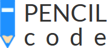

References | Examples | Resources | Sheet Music | CD Tracks | Contacts | Acknowledgement
You may have to click the
 tab after going to the Pencil Code site
tab after going to the Pencil Code site
tacts functions (on the Pencil Code website)tacts singsay function (on the Pencil Code website)play statement (on the Pencil Code website)play statement (on the Pencil Code website)

|
|
|  |
|
sing Template (PDF)singsay Template (PDF)tacts Pencil Code Functions (PDF)sing Template sing templatesing templatesing template with control buttonssingsay Template singsay templatesingsay templatesingsay templatetacts Library Many other such programs can be found at: http://drjay.pencilcode.net

Click a title link to view the score as a PDF. Click an MP3 link to play the piano accompaniment.


|
This project is supported by Award No. 1515767 from the National Science Foundation (NSF) Division of Research on Learning (DRL). It falls under the AISL program: Advanced Informal STEM (Science, Technology, Engineering, and Mathematics) Learning. Any opinions, findings, conclusions, or recommendations expressed in our materials are solely those of the authors and do not necessarily reflect the views of the National Science Foundation. |